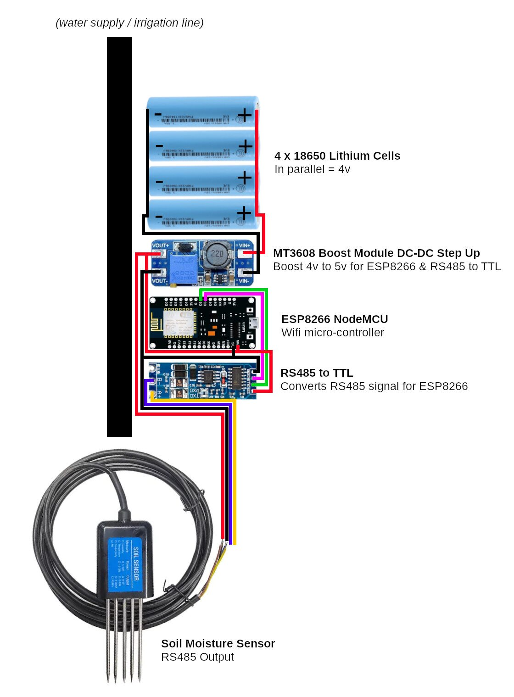

3 Module 3 · Medium · 2–3 hours
Soil Moisture Sensor
A sealed probe buried at root depth measures how much water is actually in your soil, on a node small enough to carry its own battery and sit anywhere in the field.
Bench-proven on its own node: the probe reads moisture, temperature and EC, the node sleeps between readings and POSTs to Node-RED on waking. Two of these are built and running.
- Parts
- ~$28+1 TBC
- Build time
- 2–3 hours
- Steps proven
- 6 of 6
- Board
- ESP8266
Why you would want this
- Water only when the crop actually needs it — no guessing
- Save water by not over-irrigating
- Keep soil moisture consistent, which plants prefer to feast-and-famine
- Spot fertiliser and salt build-up before it hurts yield — that's the EC reading, free
Why this probe and not the $3 capacitive one
Nearly every beginner tutorial uses a capacitive v1.2 board on an analog pin. The deciding argument is what you get back. A capacitive sensor hands you an arbitrary number with no physical meaning, and the only way to give it meaning is to calibrate against your own soil — then recalibrate when the exposed traces corrode, which they will, because you buried bare copper in wet dirt. The number degrades and nothing tells you. For a toolkit meant to be handed to someone else and left in a field, a sealed probe reporting real percent is worth the money — and it means your threshold is a number a person can reason about.
| Capacitive v1.2 | THC-S over RS485 — this module | |
|---|---|---|
| What you get back | An arbitrary number, say “512” | Calibrated %RH, plus °C and EC |
| Meaning | None until you calibrate, per soil type | Real units out of the box |
| Buried for a season | Exposed traces corrode; readings drift | Sealed stainless probe, built for soil |
| Cable run to the field | Analog over long wire picks up noise | RS485 is a differential pair, designed for it |
| On an ESP8266 | One ADC pin, 0–1 V, needs a divider | Two GPIO pins, no analog at all |
| Cost | Cheaper | More |
How it goes together

What you will need
| Part | What it does | Est. | Link |
|---|---|---|---|
| ESP8266 NodeMCU v3 (ESP-12E) | The small computer that runs the node | $3 | Buy ESP8266 NodeMCU v3 (ESP-12E) ↗ |
|
CWT THC-S soil probe
Buy the RS485 variant. You do not need the pH/NPK versions — a cheap probe claiming NPK is inferring it from EC anyway. |
Buried at root depth — moisture, temperature and EC | TBC | Buy CWT THC-S soil probe ↗ |
|
MAX485 / HW-0519 RS485-to-TTL module
The listing ships two different boards. The HW-0519 is auto-direction and needs no DE pin; the classic breakout has DE/RE and costs you a GPIO. Both work — but only the HW-0519 leaves you a spare pin for the valve relay. |
Lets the ESP8266 speak RS485 to the probe | $2 | Buy MAX485 / HW-0519 RS485-to-TTL module ↗ |
|
18650 lithium cells ×4
×4
In parallel, every cell must be at the SAME voltage before you join them. Joining a full cell to a flat one dumps the difference through the link as a short. |
The soil node's own pack — all four in parallel, ~4 V | $10 | — |
| Battery holder, 4-cell | Holds the soil node's four cells in parallel | $3 | — |
|
MT3608 boost converter
Set it to 5.0 V with NOTHING on the output. The same part as Module 2 uses, set differently. |
Steps the 1S pack's ~4 V up to the 5 V the ESP8266 and RS485 board need | $2 | Buy MT3608 boost converter ↗ |
| Jumper wires | Connects everything | $1 | — |
| USB cable | Powers the ESP8266 and loads code onto it | $2 | — |
| Waterproof container | Protects the electronics | $5 | — |
| Approximate total | ~$28 | +1 TBC | |
Prices are what we paid or expect to pay, in USD, mostly on AliExpress — they move, and shipping to a small island is its own line item. Links are not affiliate links and we get nothing if you use them.
Wiring
Soil bus — THC-S
- Baud
- 4800
- Frame
- 8N1
- Slave
- 1
| Probe wire | From | Goes to | Note |
|---|---|---|---|
| Brown | probe brown | boost OUT+ (5 V) | The probe takes 4.5–30 V, so the node's own 5 V rail runs it directly. |
| Black | probe black | boost OUT− / common ground | |
| Yellow | probe yellow | HW-0519 A | A+ — yellow is A here and B on the water probe. This is the single easiest wiring mistake in the build. |
| Blue | probe blue | HW-0519 B | B− |
Module 3 as this guide builds it
wire this onefirmware/soil-node-sleep/soil-node-sleep.ino
The standalone deep-sleep soil node. It also needs D0 wired to RST as the wake wire — keep that link removable, because flashing needs it disconnected.
| RS485 pad | ESP pin | GPIO | Direction |
|---|---|---|---|
| RXD / RO | D6 | GPIO12 | in — data toward the ESP |
| TXD / DI | D5 | GPIO14 | out — data toward the probe |
| D0 → RST | D0 | GPIO16 | deep-sleep wake — remove to flash |
| VCC | 3V3 | — | power |
| GND | GND | — | common ground star |
Combined bench node (water + soil on one ESP8266)
firmware/bench-both/bench-both.ino
Kept as a bench tool: both probes on one board, water on D5/D6 and soil on D7/D1. Useful for proving two buses coexist. It is not how the deployed farm is wired — the soil probe lives on its own node so it can sleep between readings.
| RS485 pad | ESP pin | GPIO | Direction |
|---|---|---|---|
| RXD | D7 | GPIO13 | in — data toward the ESP |
| TXD | D1 | GPIO5 | out — data toward the probe |
| VCC | 3V3 | — | power |
| GND | GND | — | common ground star |
| Register | Means | Scaling | Type |
|---|---|---|---|
| 0x0000 | Moisture | ÷10 → % | unsigned |
| 0x0001 | Temperature | ÷10 → °C | signed int16 |
| 0x0002 | EC | µS/cm as-is | unsigned |
The node's own power
Four 18650s in parallel is a single cell electrically — ~3.7 V nominal, 4.2 V full, four times the capacity, and no balancing to do because parallel cells balance themselves. The MT3608 lifts that to a steady 5 V for the ESP8266, the RS485 board and the probe, which is happy anywhere from 4.5 to 30 V.
The reason this module carries its own pack rather than tapping Module 1 is placement: a soil probe belongs in the middle of a bed, and a bed is rarely where the panel is. The node sleeps between readings, so four cells carry it a long way.
Build it, step by step
-
Prove the sensor from a laptop first
Before the ESP8266 or the battery pack exist. One thing at a time is the whole trick to bringing hardware up — and this probe needs no converter of its own, so it is the easiest thing in the toolkit to prove.
Wire the probe straight to an FT232 USB-RS485 adapter and give it 5 V. In open air, moisture and EC read 0 and that is correct — air has no water in it. Squeeze the probe in a damp hand and moisture climbs within seconds.
bun tools/poll-soil.ts # live readings, every 1 s -
Build the 1S4P pack and set the boost to 5 V
Four 18650s all in parallel — every positive to every positive. That is one cell's voltage (~3.7 V nominal, 4.2 V full) with four times the capacity, and it needs no balancing because parallel cells balance themselves.
Feed the MT3608 from the pack and set it to a steady 5.0 V with nothing on the output, then connect the ESP8266 and the RS485 board.
-
Wire the ESP8266
Four wires out of the probe, four between the RS485 module and the ESP8266, plus the deep-sleep wake link.
-
Load the code
The firmware is
firmware/soil-node-sleep/— it wakes, reads, POSTs and goes back to sleep, which is what makes four cells last a season. Copyconfig.example.htoconfig.hand edit that, never the sketch.Give each node its own name in
config.h. Two nodes publishing under one name is not an error anyone will notice until the data is already wrong.# remove the D0→RST link first, or the board will not accept a flash arduino-cli compile --upload \ --fqbn esp8266:esp8266:nodemcuv2 -p /dev/ttyUSB0 firmware/soil-node-sleep -
Choose your two thresholds
You need two numbers, not one: water below
DRY_THRESHOLD(say 30%), stop aboveWET_THRESHOLD(say 45%). The decision itself lives in Node-RED on the phone, not in this node — this node only reports, and Module 2's valve does the acting.To pick them, water your bed the way you normally would and watch what the probe reads when the soil is how you like it — that is roughly your wet threshold. Then watch over the following days and note where the plants start to look thirsty. That is roughly your dry one.
-
Install in the field
Bury the probe at root depth — the depth the roots actually drink from, not just under the surface. Too shallow and you water on the strength of a dry crust while the roots sit soaked. Pack soil firmly around it: an air gap around the tines reads dry forever.
Don't put the probe next to a dripper. You'll measure the dripper, not the bed, and it'll read wet long before the rest of the row has had a drink. Put it between emitters, where an average plant lives.
When it doesn't work
Ordered roughly by how often it has actually been the answer.
| Symptom | Almost always | What to do |
|---|---|---|
| No reading at all | A and B swapped | Swap the yellow and blue wires — note these are opposite to Module 2. |
| No reading at all | Wrong baud | This probe is 4800. Module 2's is 9600. Don't copy the number across. |
| Invalid CRC on every frame with mbpoll | Adapter echo, not a fault | Use bun tools/poll-soil.ts. The sensor is fine. |
| modbus exception 0x01 | Used 0x30 from the manual | The manual has a typo. The function code is 0x03. |
| Temperature reads ~65000 | Parsed as unsigned | Cast to int16_t. 0xFF9B = −10.1 °C. |
| Moisture always 0 and the probe IS buried | Air gap around the tines | Pack the soil firmly against the probe. |
| Board won't accept a flash | D0 is still linked to RST | Remove the wake link, flash, put it back. |
| Node wakes powered but unresponsive | Flash chip, not the sketch | Check the chip ID. An XMC (0x20) part is bench-proven for deep sleep here. |
| Pack goes flat in weeks, not months | The node isn't actually sleeping | Confirm the D0→RST link is fitted and the sketch reaches deepSleep. An awake ESP8266 draws ~100× its sleeping current. |
| Two nodes' readings jump around each other | Both publishing under one node name | Give each node its own name in config.h. |
How this fits with the others
The source
- Full module document — docs/02-soil-moisture-drip-irrigation.md ↗
- Firmware — firmware/soil-node-sleep/ ↗
- Build journal, including everything that went wrong ↗
- Full wiring cheatsheet
Built and measured on our bench. Not the same as field-soaked.